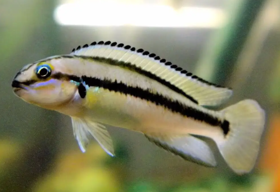

Systématique
- Ordre : Cichliformes
- Famille : Cichlidae
- Genre : Telmatochromis
- Espèce : T. vittatus
- Auteur : Boulenger, 1898

Telmatochromis vittatus est un petit cichlidé endémique du lac Tanganyika. Il se caractérise par un corps allongé et cylindrique, typique des espèces vivant dans les zones rocheuses. Sa coloration de base est beige à ocre, marquée par une ligne longitudinale sombre (vitta) très nette qui part du museau, traverse l'œil et se termine à la base de la nageoire caudale.
Le mâle atteint environ 8 à 9 cm, tandis que la femelle est légèrement plus petite, avoisinant les 7 cm. Contrairement à certains de ses cousins, il ne possède pas de couleurs vives, mais ses motifs graphiques et son comportement en font une espèce intéressante. Il peut être confondu avec Telmatochromis bifrenatus, mais s'en distingue par son corps plus massif et sa ligne latérale unique plus épaisse.
Il s'agit d'un poisson pétricole (vivant parmi les pierres) qui occupe les zones intermédiaires et rocheuses du lac. Telmatochromis vittatus est territorial mais relativement paisible envers les espèces qui ne partagent pas ses besoins écologiques. Il passe la majeure partie de son temps à patrouiller entre les anfractuosités des roches à la recherche de nourriture.
En aquarium, il nécessite un décor constitué d'amas rocheux créant de nombreuses grottes et fissures. C'est un poisson discret qui reste proche de ses cachettes. Bien qu'il vive principalement sur le substrat, il n'hésite pas à s'aventurer en pleine eau lors des distributions de nourriture. Il peut se montrer agressif envers ses semblables s'ils manquent d'espace.
Mode : ovipare pondeur sur substrat caché (cavitole).
Le couple choisit une cavité étroite ou une fissure pour y déposer les œufs. La femelle assure la garde rapprochée de la ponte, tandis que le mâle surveille les abords du territoire. Fait intéressant : cette espèce utilise parfois des coquilles d'escargots vides (type Neothauma) comme site de ponte si les roches font défaut, bien qu'il ne soit pas un conchicole strict.
Les alevins atteignent la nage libre après environ une semaine. Les parents protègent la progéniture pendant plusieurs semaines. Les jeunes sont assez robustes et acceptent rapidement des nauplies d'artémias ou des micro-granulés finement broyés.
Dimorphisme sexuel : peu marqué. Le mâle est généralement plus grand que la femelle. Chez les spécimens matures, les nageoires impaires (dorsale et anale) peuvent être légèrement plus effilées chez le mâle. L'observation des papilles génitales au moment du frai reste la méthode de distinction la plus sûre.
Espérance de vie : environ 5 à 8 ans en aquarium.
L'espèce fréquente le littoral rocheux du lac Tanganyika, souvent dans les zones où les rochers rencontrent le sable (zone intermédiaire), à des profondeurs variant entre 5 et 20 mètres. On le trouve également dans des zones riches en coquilles vides accumulées. L'eau y est alcaline, dure et extrêmement stable.
Répartition

Origine naturelle :
- Afrique de l'Est : Endémique du lac Tanganyika.
- Présent tout autour du lac (Burundi, Tanzanie, Zambie, RD Congo).
- Localité type : Mbity Rocks, lac Tanganyika.
Paramètres de maintenance
Température : 24 à 27 °C.
pH : 8,2 à 9,2.
GH : 10 à 20 °dGH.
Aménagement : Roches calcaires empilées, sable de Loire, quelques coquilles vides.
Volume conseillé : minimum 100 litres pour un couple, 200 litres pour un bac communautaire Tanganyika.
Régime alimentaire
Régime : omnivore à tendance carnivore.
Dans la nature, il se nourrit de micro-invertébrés, de petits crustacés et picore parfois l'aufwuchs (couverture biologique sur les roches). En aquarium, il accepte les nourritures sèches de qualité, mais apprécie grandement les apports de surgelé ou de vivant (cyclops, artémias, mysis).